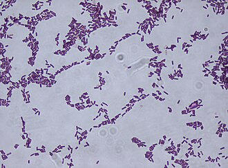
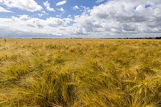

Digest food
How this trait became 2 genes to order.
All 37 genes · How the search works · Every trait
1. What this trait needs done
A trait is rarely one thing. Each job below needs its own protein.
| Job | What we search for | Why it is a separate job |
|---|---|---|
| Break down starch, the stuff in a potato | amylase, glucoamylase |
starch is the main energy store in plant matter |
| Break down fat and oil | lipase |
a different food needing a different enzyme; starch enzymes cannot touch fat |
Term source: UniProt KW-0222 Digestion
2. What the search returned
| Search term | Proteins found |
|---|---|
lipase |
235 |
amylase |
105 |
glucoamylase |
16 |
356 different proteins once duplicates are removed.
3. What was thrown out
| Rule it broke | How many |
|---|---|
| comes from a germ that makes people ill | 60 |
| name contains “inhibitor” | 32 |
| too long to print affordably | 2 |
| too short to do a job | 1 |
261 survived.
All 95 rejected proteins
| Protein | From | Found by | Rejected because |
|---|---|---|---|
| Alpha-amylase A type-1/2 | Aspergillus oryzae | amylase | comes from a germ that makes people ill |
| Trehalose synthase/amylase TreS | Mycolicibacterium smegmati | amylase | comes from a germ that makes people ill |
| Trehalose synthase/amylase TreS | Mycobacterium tuberculosis | amylase | comes from a germ that makes people ill |
| Acid alpha-amylase | Aspergillus niger | amylase | comes from a germ that makes people ill |
| Alpha-amylase | Aspergillus usamii | amylase | comes from a germ that makes people ill |
| Glucoamylase | Aspergillus niger | glucoamylase | comes from a germ that makes people ill |
| Glucoamylase | Aspergillus awamori | glucoamylase | comes from a germ that makes people ill |
| Glucoamylase 1 | Candida albicans | glucoamylase | comes from a germ that makes people ill |
| Glucoamylase I | Aspergillus kawachii | glucoamylase | comes from a germ that makes people ill |
| Glucoamylase ARB_02327-1 | Arthroderma benhamiae | glucoamylase | comes from a germ that makes people ill |
| Glucoamylase 1 | Rhizopus oryzae | glucoamylase | comes from a germ that makes people ill |
| Glucoamylase amyD | Rhizopus delemar | glucoamylase | comes from a germ that makes people ill |
| Lipase | Rhizopus niveus | lipase | comes from a germ that makes people ill |
| Triacylglycerol lipase | Mycobacterium tuberculosis | lipase | comes from a germ that makes people ill |
| Lipase | Staphylococcus hyicus | lipase | comes from a germ that makes people ill |
| Lipase | Rhizopus oryzae | lipase | comes from a germ that makes people ill |
| Triacylglycerol lipase | Burkholderia plantarii | lipase | comes from a germ that makes people ill |
| Triacylglycerol lipase | Vibrio cholerae serotype O | lipase | comes from a germ that makes people ill |
| Triacylglycerol lipase | Burkholderia cepacia | lipase | comes from a germ that makes people ill |
| Triacylglycerol lipase | Pseudomonas aeruginosa | lipase | comes from a germ that makes people ill |
| Lipase LipV | Mycobacterium tuberculosis | lipase | comes from a germ that makes people ill |
| Lipase 5 | Candida albicans | lipase | comes from a germ that makes people ill |
| Monoacylglycerol lipase | Mycobacterium tuberculosis | lipase | comes from a germ that makes people ill |
| GDSL lipase Rv0518 | Mycobacterium tuberculosis | lipase | comes from a germ that makes people ill |
| Bifunctional lipase/adenylate cyclase LipJ [Includes | Mycobacterium tuberculosis | lipase | comes from a germ that makes people ill |
| Carboxylesterase/lipase Culp6 | Mycobacterium tuberculosis | lipase | comes from a germ that makes people ill |
| Cutinase | Amycolatopsis mediterranei | lipase | comes from a germ that makes people ill |
| Sophorolipid transesterase | Starmerella bombicola | lipase | comes from a germ that makes people ill |
| Lipase-specific foldase | Burkholderia plantarii | lipase | comes from a germ that makes people ill |
| Lipase 1 | Candida albicans | lipase | comes from a germ that makes people ill |
| Lipase 2 | Candida albicans | lipase | comes from a germ that makes people ill |
| Secreted mono- and diacylglycerol lipase 1 | Gibberella zeae | lipase | comes from a germ that makes people ill |
| Secreted mono- and diacylglycerol lipase 3 | Gibberella zeae | lipase | comes from a germ that makes people ill |
| Lipase 2 | Staphylococcus aureus | lipase | comes from a germ that makes people ill |
| Variant-surface-glycoprotein phospholipase C | Trypanosoma brucei brucei | lipase | comes from a germ that makes people ill |
| Lipase chaperone | Pseudomonas aeruginosa | lipase | comes from a germ that makes people ill |
| Lipase 3 | Moraxella sp. | lipase | comes from a germ that makes people ill |
| Lipase 1 | Diutina rugosa | lipase | comes from a germ that makes people ill |
| Lipase 2 | Diutina rugosa | lipase | comes from a germ that makes people ill |
| Secreted lipase 4 | Gibberella zeae | lipase | comes from a germ that makes people ill |
| Monoacylglycerol lipase | Mycolicibacterium smegmati | lipase | comes from a germ that makes people ill |
| Secreted lipase 5 | Gibberella zeae | lipase | comes from a germ that makes people ill |
| Lipase | Staphylococcus epidermidis | lipase | comes from a germ that makes people ill |
| Lipase 3 | Diutina rugosa | lipase | comes from a germ that makes people ill |
| Secreted triacylglycerol lipase LIP1 | Gibberella zeae | lipase | comes from a germ that makes people ill |
| Probable secreted lipase ARB_02369 | Arthroderma benhamiae | lipase | comes from a germ that makes people ill |
| Probable secreted lipase ARB_00047 | Arthroderma benhamiae | lipase | comes from a germ that makes people ill |
| Secreted mono- and diacylglycerol lipase 2 | Gibberella zeae | lipase | comes from a germ that makes people ill |
| Lipase 1 | Staphylococcus aureus | lipase | comes from a germ that makes people ill |
| Type VI lipase immunity protein Tli3 | Pseudomonas aeruginosa | lipase | comes from a germ that makes people ill |
| Type VI lipase adapter protein Tla3 | Pseudomonas aeruginosa | lipase | comes from a germ that makes people ill |
| Lipase 2 | Staphylococcus aureus | lipase | comes from a germ that makes people ill |
| Secreted mono- and diacylglycerol lipase 1 | Fusarium solani | lipase | comes from a germ that makes people ill |
| Lipase 2 | Staphylococcus aureus | lipase | comes from a germ that makes people ill |
| Antibacterial effector protein Tle3 | Pseudomonas aeruginosa | lipase | comes from a germ that makes people ill |
| Lipase 2 | Moraxella sp. | lipase | comes from a germ that makes people ill |
| Lipase 1 | Moraxella sp. | lipase | comes from a germ that makes people ill |
| Secreted lipase ARB07186/07185 | Arthroderma benhamiae | lipase | comes from a germ that makes people ill |
| Secreted lipase ARB_01498 | Arthroderma benhamiae | lipase | comes from a germ that makes people ill |
| Probable inactive lipase Rv1592c | Mycobacterium tuberculosis | lipase | comes from a germ that makes people ill |
| Alpha-amylase inhibitor 0.28 | Triticum aestivum | amylase | name contains “inhibitor” – it BLOCKS this trait instead of doing it |
| Alpha-amylase inhibitor 1 | Phaseolus vulgaris | amylase | name contains “inhibitor” – it BLOCKS this trait instead of doing it |
| Alpha-amylase/trypsin inhibitor CMb | Hordeum vulgare | amylase | name contains “inhibitor” – it BLOCKS this trait instead of doing it |
| Alpha-amylase inhibitor 0.19 | Triticum aestivum | amylase | name contains “inhibitor” – it BLOCKS this trait instead of doing it |
| Trypsin inhibitor CMe | Hordeum vulgare | amylase | name contains “inhibitor” – it BLOCKS this trait instead of doing it |
| Alpha-amylase/subtilisin inhibitor | Oryza sativa subsp. japoni | amylase | name contains “inhibitor” – it BLOCKS this trait instead of doing it |
| 17kDa alpha-amylase/trypsin inhibitor 2 | Oryza sativa subsp. japoni | amylase | name contains “inhibitor” – it BLOCKS this trait instead of doing it |
| Alpha-amylase/trypsin inhibitor RA16 | Oryza sativa subsp. japoni | amylase | name contains “inhibitor” – it BLOCKS this trait instead of doing it |
| Alpha-amylase inhibitor helianthamide | Stichodactyla helianthus | amylase | name contains “inhibitor” – it BLOCKS this trait instead of doing it |
| Alpha-amylase inhibitor magnificamide | Heteractis magnifica | amylase | name contains “inhibitor” – it BLOCKS this trait instead of doing it |
| Alpha-amylase inhibitor BDAI-1 | Hordeum vulgare | amylase | name contains “inhibitor” – it BLOCKS this trait instead of doing it |
| Alpha-amylase/subtilisin inhibitor | Hordeum vulgare | amylase | name contains “inhibitor” – it BLOCKS this trait instead of doing it |
| Alpha-amylase inhibitor 0.53 | Triticum aestivum | amylase | name contains “inhibitor” – it BLOCKS this trait instead of doing it |
| Alpha-amylase inhibitor 2 | Phaseolus vulgaris | amylase | name contains “inhibitor” – it BLOCKS this trait instead of doing it |
| Alpha-amylase/trypsin inhibitor | Eleusine coracana | amylase | name contains “inhibitor” – it BLOCKS this trait instead of doing it |
| Alpha-amylase/trypsin inhibitor CMd | Hordeum vulgare | amylase | name contains “inhibitor” – it BLOCKS this trait instead of doing it |
| Alpha-amylase/trypsin inhibitor CM16 | Triticum aestivum | amylase | name contains “inhibitor” – it BLOCKS this trait instead of doing it |
| Alpha-amylase/trypsin inhibitor CM3 | Triticum aestivum | amylase | name contains “inhibitor” – it BLOCKS this trait instead of doing it |
| Alpha-amylase/trypsin inhibitor CM1 | Triticum aestivum | amylase | name contains “inhibitor” – it BLOCKS this trait instead of doing it |
| Alpha-amylase/trypsin inhibitor CM2 | Triticum aestivum | amylase | name contains “inhibitor” – it BLOCKS this trait instead of doing it |
| Alpha-amylase/trypsin inhibitor CMa | Hordeum vulgare | amylase | name contains “inhibitor” – it BLOCKS this trait instead of doing it |
| 17kDa alpha-amylase/trypsin inhibitor 1 | Oryza sativa subsp. japoni | amylase | name contains “inhibitor” – it BLOCKS this trait instead of doing it |
| Alpha-amylase inhibitor Z-2685 | Streptomyces rochei | amylase | name contains “inhibitor” – it BLOCKS this trait instead of doing it |
| Alpha-amylase inhibitor Paim-1 | Streptomyces olivaceovirid | amylase | name contains “inhibitor” – it BLOCKS this trait instead of doing it |
| Alpha-amylase inhibitor Paim-2 | Streptomyces olivaceovirid | amylase | name contains “inhibitor” – it BLOCKS this trait instead of doing it |
| Alpha-amylase inhibitor HOE-467A | Streptomyces tendae | amylase | name contains “inhibitor” – it BLOCKS this trait instead of doing it |
| Endogenous alpha-amylase/subtilisin inhibitor | Triticum aestivum | amylase | name contains “inhibitor” – it BLOCKS this trait instead of doing it |
| Alpha-amylase/trypsin inhibitor | Zea mays | amylase | name contains “inhibitor” – it BLOCKS this trait instead of doing it |
| Alpha-amylase inhibitor 5 | Sorghum bicolor | amylase | name contains “inhibitor” – it BLOCKS this trait instead of doing it |
| Alpha-amylase inhibitor Haim-2 | Streptomyces griseosporeus | amylase | name contains “inhibitor” – it BLOCKS this trait instead of doing it |
| Alpha-amylase inhibitor Haim-1 | Streptomyces griseosporeus | amylase | name contains “inhibitor” – it BLOCKS this trait instead of doing it |
| Alpha-amylase inhibitor 4 | Sorghum bicolor | amylase | name contains “inhibitor” – it BLOCKS this trait instead of doing it |
| Probable maltase-glucoamylase 2 | Homo sapiens | glucoamylase | too long to print affordably (2515 letters, cap 2000) |
| Maltase-glucoamylase | Homo sapiens | glucoamylase | too long to print affordably (2753 letters, cap 2000) |
| Alpha-amylase inhibitor AAI | Amaranthus hypochondriacus | amylase | too short to do a job (32 letters, need 40+) |
4. How the winner is picked
From the survivors, one protein per job. Ties break in this order:
- nothing rules it out
- the term it matched sits higher in the job’s list
- not an over-studied lab organism
- better curation score
- shorter, because you pay per letter of DNA
5. The 2 genes to order
Lipase EstA
- Job: Break down fat and oil
- From:

Bacillus subtilis - Size: 212 amino acids → 639 letters of DNA
- UniProt: P37957
Sequences
Protein:
MKFVKRRIIALVTILMLSVTSLFALQPSAKAAEHNPVVMVHGIGGASFNFAGIKSYLVSQGWSRDKLYAVDFWDKTGTNYNNGPVLSRFVQKVLDETGAKKVDIVAHSMGGANTLYYIKNLDGGNKVANVVTLGGANRLTTGKALPGTDPNQKILYTSIYSSADMIVMNYLSRLDGARNVQIHGVGHIGLLYSSQVNSLIKEGLNGGGQNTNDNA to order:
ATGAAGTTCGTCAAGCGCCGTATCATCGCTTTGGTCACTATCCTCATGCTCTCTGTTACCTCTCTCTTCGCCTTGCAGCCTTCTGCTAAAGCTGCTGAACATAACCCTGTTGTCATGGTCCACGGTATCGGTGGTGCTTCTTTCAACTTCGCTGGTATCAAGTCTTACCTCGTCTCCCAGGGTTGGTCTAGAGATAAGCTCTACGCTGTTGATTTCTGGGACAAGACCGGCACTAACTACAACAACGGCCCTGTTCTCTCTAGATTTGTCCAGAAGGTCCTCGACGAAACTGGTGCTAAGAAGGTCGACATCGTTGCTCATTCTATGGGCGGTGCTAATACCCTCTACTACATCAAGAACCTCGACGGCGGTAATAAGGTCGCCAACGTTGTCACTTTGGGTGGTGCTAATAGACTCACCACCGGTAAAGCTCTCCCTGGTACTGATCCTAACCAGAAGATTCTCTACACCTCCATCTACTCCTCCGCCGATATGATCGTCATGAACTACCTCTCTAGACTCGACGGTGCTAGAAACGTCCAGATCCACGGTGTTGGTCATATTGGTTTGCTCTACTCCTCCCAAGTCAACTCCCTCATCAAGGAGGGCTTAAACGGTGGTGGTCAAAATACCAACTAAAlpha-amylase type A isozyme
- Job: Break down starch, the stuff in a potato
- From:

Hordeum vulgare - Size: 438 amino acids → 1317 letters of DNA
- UniProt: P00693
Sequences
Protein:
MGKNGSLCCFSLLLLLLLAGLASGHQVLFQGFNWESWKQSGGWYNMMMGKVDDIAAAGVTHVWLPPPSHSVSNEGYMPGRLYDIDASKYGNAAELKSLIGALHGKGVQAIADIVINHRCADYKDSRGIYCIFEGGTSDGRLDWGPHMICRDDTKYSDGTANLDTGADFAAAPDIDHLNDRVQRELKEWLLWLKSDLGFDAWRLDFARGYSPEMAKVYIDGTSPSLAVAEVWDNMATGGDGKPNYDQDAHRQNLVNWVDKVGGAASAGMVFDFTTKGILNAAVEGELWRLIDPQGKAPGVMGWWPAKAATFVDNHDTGSTQAMWPFPSDKVMQGYAYILTHPGIPCIFYDHFFNWGFKDQIAALVAIRKRNGITATSALKILMHEGDAYVAEIDGKVVVKIGSRYDVGAVIPAGFVTSAHGNDYAVWEKNGAAATLQRSDNA to order:
ATGGGTAAGAACGGTTCCTTGTGCTGTTTCTCCCTCTTGCTCTTGCTCTTGCTCGCTGGTTTAGCTTCTGGTCATCAAGTTCTCTTCCAGGGTTTCAACTGGGAGTCCTGGAAGCAATCCGGTGGTTGGTATAATATGATGATGGGCAAGGTCGACGACATCGCCGCTGCTGGTGTTACTCATGTTTGGTTACCTCCTCCTTCTCATTCTGTCTCCAACGAGGGCTACATGCCTGGTAGATTATACGACATCGACGCTTCTAAGTACGGCAACGCCGCTGAACTCAAGTCTTTAATCGGTGCTCTCCATGGTAAAGGTGTCCAGGCCATCGCTGATATCGTTATTAACCACCGCTGCGCTGATTATAAGGACTCCCGCGGTATCTACTGCATTTTTGAGGGTGGTACCTCCGATGGTAGATTAGACTGGGGCCCTCATATGATTTGTCGTGACGATACCAAGTACTCCGACGGTACTGCTAACCTCGACACTGGTGCTGATTTCGCTGCTGCTCCTGATATTGATCACTTGAACGACCGTGTCCAGCGTGAATTGAAGGAGTGGCTCTTGTGGTTAAAGTCTGACCTCGGTTTCGACGCCTGGAGATTAGATTTCGCCAGAGGTTATTCTCCTGAGATGGCTAAGGTCTACATCGACGGCACTTCTCCTTCCTTGGCTGTTGCTGAAGTTTGGGATAACATGGCTACCGGTGGTGATGGTAAGCCTAACTACGACCAGGATGCTCATAGACAAAACCTCGTCAACTGGGTCGACAAGGTTGGTGGTGCTGCTTCTGCTGGTATGGTTTTTGATTTCACCACCAAGGGCATCCTCAACGCCGCTGTTGAGGGTGAATTATGGAGATTAATCGACCCTCAGGGTAAGGCTCCCGGTGTTATGGGCTGGTGGCCTGCTAAAGCTGCTACTTTTGTTGATAACCACGACACTGGTTCCACCCAGGCCATGTGGCCTTTTCCTTCTGATAAAGTTATGCAGGGTTACGCTTACATCCTCACCCACCCCGGTATCCCTTGTATTTTTTACGACCACTTCTTCAACTGGGGTTTCAAGGACCAGATCGCCGCCTTAGTTGCTATCAGAAAGAGAAACGGCATCACTGCTACCTCTGCTCTCAAGATCCTCATGCACGAAGGTGATGCTTACGTTGCTGAAATCGACGGCAAGGTTGTCGTTAAGATCGGCTCCAGATACGACGTTGGTGCTGTTATCCCTGCTGGTTTCGTTACTTCTGCTCACGGTAACGACTACGCTGTCTGGGAAAAGAACGGTGCTGCTGCTACTTTACAGAGATCCTAA6. The 259 we did not order
These passed every rule. Each job takes one protein, so the rest simply were not needed, and every extra gene costs the host energy.
14 of them were ruled out for a different reason, and only those say why.
See them all
| Protein | From | Length | Found by | Ruled out because |
|---|---|---|---|---|
| Alpha-amylase 3, chloroplastic | Arabidopsis thaliana | 887 | amylase | needs a compartment the host does not have |
| Beta-amylase 1, chloroplastic | Arabidopsis thaliana | 575 | amylase | needs a compartment the host does not have |
| Beta-amylase 1, chloroplastic | Oryza sativa subsp. japo | 535 | amylase | needs a compartment the host does not have |
| Beta-amylase 2, chloroplastic | Arabidopsis thaliana | 542 | amylase | needs a compartment the host does not have |
| Beta-amylase 2, chloroplastic | Oryza sativa subsp. japo | 557 | amylase | needs a compartment the host does not have |
| Beta-amylase 3, chloroplastic | Arabidopsis thaliana | 548 | amylase | needs a compartment the host does not have |
| Periplasmic alpha-amylase | Escherichia coli | 676 | amylase | needs a compartment the host does not have |
| Phospholipase A1 PLIP1, chloroplastic | Arabidopsis thaliana | 649 | lipase | needs a compartment the host does not have |
| Phospholipase A1 PLIP2, chloroplastic | Arabidopsis thaliana | 713 | lipase | needs a compartment the host does not have |
| Phospholipase A1 PLIP3, chloroplastic | Arabidopsis thaliana | 649 | lipase | needs a compartment the host does not have |
| Phospholipase A1-Ialpha2, chloroplastic | Arabidopsis thaliana | 484 | lipase | needs a compartment the host does not have |
| Phospholipase A1-Igamma1, chloroplastic | Arabidopsis thaliana | 515 | lipase | needs a compartment the host does not have |
| Phospholipase A1-Igamma2, chloroplastic | Arabidopsis thaliana | 529 | lipase | needs a compartment the host does not have |
| Phospholipase A1-Igamma3, chloroplastic | Arabidopsis thaliana | 527 | lipase | needs a compartment the host does not have |
| (Lyso)-N-acylphosphatidylethanolamine lipase | Homo sapiens | 342 | lipase | |
| (Lyso)-N-acylphosphatidylethanolamine lipase | Mus musculus | 342 | lipase | |
| Alpha-amylase | Oryza sativa subsp. japo | 434 | amylase | |
| Alpha-amylase | Oryzias latipes | 512 | amylase | |
| Alpha-amylase | Tenebrio molitor | 471 | amylase | |
| Alpha-amylase | Pseudoalteromonas halopl | 669 | amylase | |
| Alpha-amylase | Bacillus licheniformis | 512 | amylase | |
| Alpha-amylase | Bacillus subtilis | 659 | amylase | |
| Alpha-amylase | Niallia circulans | 1290 | amylase | |
| Alpha-amylase | Pyrococcus furiosus | 649 | amylase | |
| Alpha-amylase | Geobacillus stearothermo | 549 | amylase | |
| Alpha-amylase | Streptomyces lividans | 919 | amylase | |
| Alpha-amylase | Bacillus amyloliquefacie | 514 | amylase | |
| Alpha-amylase | Acarus siro | 517 | amylase | |
| Alpha-amylase | Priestia megaterium | 520 | amylase | |
| Alpha-amylase | Thermomonospora curvata | 605 | amylase | |
| Alpha-amylase 1 | Mus musculus | 511 | amylase | |
| Alpha-amylase 1 | Arabidopsis thaliana | 423 | amylase | |
| Alpha-amylase 1 | Schwanniomyces occidenta | 512 | amylase | |
| Alpha-amylase 1 | Lipomyces kononenkoae | 624 | amylase | |
| Alpha-amylase 1 | Dictyoglomus thermophilu | 686 | amylase | |
| Alpha-amylase 1A | Homo sapiens | 511 | amylase | |
| Alpha-amylase 1B | Homo sapiens | 511 | amylase | |
| Alpha-amylase 1C | Homo sapiens | 511 | amylase | |
| Alpha-amylase 2 | Dictyoglomus thermophilu | 562 | amylase | |
| Alpha-amylase 2B | Homo sapiens | 511 | amylase | |
| Alpha-amylase A | Drosophila melanogaster | 494 | amylase | |
| Alpha-amylase MalA | Haloarcula japonica | 663 | amylase | |
| Alpha-amylase SusG | Bacteroides thetaiotaomi | 692 | amylase | |
| Alpha-amylase type B isozyme | Hordeum vulgare | 427 | amylase | |
| Amylopullulanase | Thermoanaerobacter pseud | 1481 | amylase | |
| Amylopullulanase | Thermoanaerobacter therm | 1475 | amylase | |
| Beta-amylase | Bacillus cereus | 546 | amylase | |
| Beta-amylase | Glycine max | 496 | amylase | |
| Beta-amylase | Hordeum vulgare subsp. s | 535 | amylase | |
| Beta-amylase | Hordeum vulgare | 535 | amylase | |
| Beta-amylase | Ipomoea batatas | 499 | amylase | |
| Beta-amylase | Trichomonas vaginalis | 377 | amylase | |
| Beta-amylase 7 | Arabidopsis thaliana | 691 | amylase | |
| Beta-amylase 8 | Arabidopsis thaliana | 689 | amylase | |
| Beta-amylase Tri a 17 | Triticum aestivum | 503 | amylase | |
| Beta/alpha-amylase [Includes: Beta-amylase | Paenibacillus polymyxa | 1196 | amylase | |
| Bile salt-activated lipase | Homo sapiens | 753 | lipase | |
| Bile salt-activated lipase | Rattus norvegicus | 612 | lipase | |
| Bile salt-activated lipase | Mus musculus | 599 | lipase | |
| Catabolite control protein A | Bacillus subtilis | 334 | amylase | |
| Catabolite control protein A | Priestia megaterium | 332 | amylase | |
| Cyclomaltodextrin glucanotransferase | Bacillus sp. | 713 | amylase | |
| Cytoplasmic alpha-amylase | Escherichia coli | 495 | amylase | |
| Diacylglycerol lipase-alpha | Homo sapiens | 1042 | lipase | |
| Diacylglycerol lipase-alpha | Rattus norvegicus | 1044 | lipase | |
| Diacylglycerol lipase-alpha | Mus musculus | 1044 | lipase | |
| Diacylglycerol lipase-beta | Homo sapiens | 672 | lipase | |
| Diacylglycerol lipase-beta | Rattus norvegicus | 668 | lipase | |
| Diacylglycerol lipase-beta | Mus musculus | 669 | lipase | |
| Endothelial lipase | Homo sapiens | 500 | lipase | |
| Extracellular esterase EstB | Bacillus subtilis | 210 | lipase | |
| Extracellular lipase | Aeromonas hydrophila | 684 | lipase | |
| GDSL esterase/lipase | Carica papaya | 343 | lipase | |
| GDSL esterase/lipase 1 | Arabidopsis thaliana | 374 | lipase | |
| GDSL esterase/lipase 22 | Arabidopsis thaliana | 391 | lipase | |
| GDSL esterase/lipase ACHE | Zea mays | 396 | lipase | |
| GDSL esterase/lipase At1g29660 | Arabidopsis thaliana | 364 | lipase | |
| GDSL esterase/lipase At3g26430 | Arabidopsis thaliana | 380 | lipase | |
| GDSL esterase/lipase ENOD8 | Medicago truncatula | 384 | lipase | |
| GDSL esterase/lipase ESM1 | Arabidopsis thaliana | 392 | lipase | |
| GDSL esterase/lipase EXL4 | Arabidopsis thaliana | 343 | lipase | |
| GDSL esterase/lipase EXL6 | Arabidopsis thaliana | 343 | lipase | |
| GDSL esterase/lipase LTL1 | Arabidopsis thaliana | 366 | lipase | |
| GDSL lipase | Tanacetum cinerariifoliu | 365 | lipase | |
| Gastric triacylglycerol lipase | Homo sapiens | 398 | lipase | |
| Gastric triacylglycerol lipase | Rattus norvegicus | 395 | lipase | |
| Gastric triacylglycerol lipase | Canis lupus familiaris | 398 | lipase | |
| Gastric triacylglycerol lipase | Bos taurus | 397 | lipase | |
| Glucan 1,4-alpha-glucosidase SusB | Bacteroides thetaiotaomi | 738 | glucoamylase | |
| Glucan 1,4-alpha-maltohexaosidase | Bacillus sp. | 518 | amylase | |
| Glucan 1,4-alpha-maltotetraohydrolase | Stutzerimonas stutzeri | 548 | amylase | |
| Glucan 1,4-alpha-maltotetraohydrolase | Roseateles saccharophilu | 551 | amylase | |
| Glucoamylase | Neurospora crassa | 626 | glucoamylase | |
| Glucoamylase | Clostridium sp. | 702 | glucoamylase | |
| Glucoamylase 1 | Schwanniomyces occidenta | 958 | glucoamylase | |
| Glucoamylase ARB_02327-1 | Schizophyllum commune | 576 | glucoamylase | |
| Glucoamylase GLU1 | Saccharomycopsis fibulig | 519 | glucoamylase | |
| Glucoamylase P | Amorphotheca resinae | 616 | glucoamylase | |
| Hepatic triacylglycerol lipase | Homo sapiens | 499 | lipase | |
| Hepatic triacylglycerol lipase | Rattus norvegicus | 494 | lipase | |
| Hepatic triacylglycerol lipase | Oryctolagus cuniculus | 499 | lipase | |
| Hormone-sensitive lipase | Homo sapiens | 1076 | lipase | |
| Hormone-sensitive lipase | Rattus norvegicus | 1068 | lipase | |
| Hormone-sensitive lipase | Mus musculus | 759 | lipase | |
| Hormone-sensitive lipase | Bos taurus | 756 | lipase | |
| Inactive GDSL esterase/lipase-like protein 23 | Arabidopsis thaliana | 386 | lipase | |
| Inactive GDSL esterase/lipase-like protein 25 | Arabidopsis thaliana | 417 | lipase | |
| Inactive pancreatic lipase-related protein 1 | Homo sapiens | 467 | lipase | |
| Inactive pancreatic lipase-related protein 1 | Canis lupus familiaris | 467 | lipase | |
| Inactive pancreatic lipase-related protein 1 | Mus musculus | 473 | lipase | |
| Intracellular maltogenic amylase | Bacillus subtilis | 588 | amylase | |
| Legumin | Cicer arietinum | 496 | amylase | |
| Lipase | Streptomyces rimosus | 268 | lipase | |
| Lipase | Bacillus sp | 416 | lipase | |
| Lipase | Thermomyces lanuginosus | 291 | lipase | |
| Lipase | Rhizomucor miehei | 363 | lipase | |
| Lipase | Pseudomonas fluorescens | 449 | lipase | |
| Lipase 1 | Geotrichum candidum | 563 | lipase | |
| Lipase 1 | Geotrichum fermentans | 563 | lipase | |
| Lipase 1 | Streptomyces coelicolor | 268 | lipase | |
| Lipase 1 | Psychrobacter immobilis | 317 | lipase | |
| Lipase 1 | Photorhabdus luminescens | 645 | lipase | |
| Lipase 2 | Geotrichum candidum | 563 | lipase | |
| Lipase 2 | Streptomyces coelicolor | 295 | lipase | |
| Lipase A | Moesziomyces aphidis | 462 | lipase | |
| Lipase A | Sodiomyces alcalophilus | 416 | lipase | |
| Lipase B | Moesziomyces antarcticus | 342 | lipase | |
| Lipase ZK262.3 | Caenorhabditis elegans | 353 | lipase | |
| Lipase lipl-4 | Caenorhabditis elegans | 411 | lipase | |
| Lipase maturation factor 1 | Homo sapiens | 567 | lipase | |
| Lipase maturation factor 1 | Mus musculus | 574 | lipase | |
| Lipase maturation factor 2 | Homo sapiens | 707 | lipase | |
| Lipase maturation factor 2 | Mus musculus | 702 | lipase | |
| Lipase member H | Homo sapiens | 451 | lipase | |
| Lipase member I | Homo sapiens | 460 | lipase | |
| Lipase member K | Homo sapiens | 399 | lipase | |
| Lipase member N | Homo sapiens | 398 | lipase | |
| Lipase member N | Mus musculus | 400 | lipase | |
| Lipase-like PAD4 | Arabidopsis thaliana | 541 | lipase | |
| Lipid droplet hydrolase 1 | Saccharomyces cerevisiae | 375 | lipase | |
| Lipid droplet-associated triacylglycerol lipase | Saccharomyces cerevisiae | 304 | lipase | |
| Lipoprotein lipase | Homo sapiens | 475 | lipase | |
| Lipoprotein lipase | Mus musculus | 474 | lipase | |
| Lipoprotein lipase | Bos taurus | 478 | lipase | |
| Lipoprotein lipase | Rattus norvegicus | 474 | lipase | |
| Lipoprotein lipase | Neogale vison | 475 | lipase | |
| Lipoprotein lipase | Gallus gallus | 490 | lipase | |
| Lipoprotein lipase | Felis catus | 478 | lipase | |
| Lysophosphatidylserine lipase ABHD12 | Homo sapiens | 398 | lipase | |
| Lysophosphatidylserine lipase ABHD12 | Mus musculus | 398 | lipase | |
| Lysosomal acid lipase/cholesteryl ester hydrolase | Homo sapiens | 399 | lipase | |
| Lysosomal acid lipase/cholesteryl ester hydrolase | Mus musculus | 397 | lipase | |
| Maltogenic alpha-amylase | Geobacillus stearothermo | 719 | amylase | |
| Monoacylglycerol lipase | Saccharomyces cerevisiae | 449 | lipase | |
| Monoacylglycerol lipase ABHD2 | Homo sapiens | 425 | lipase | |
| Monoacylglycerol lipase ABHD2 | Mus musculus | 425 | lipase | |
| Monoacylglycerol lipase ABHD6 | Homo sapiens | 337 | lipase | |
| Monoacylglycerol lipase ABHD6 | Rattus norvegicus | 337 | lipase | |
| Monoacylglycerol lipase ABHD6 | Mus musculus | 336 | lipase | |
| Monoglyceride lipase | Homo sapiens | 303 | lipase | |
| Monoglyceride lipase | Mus musculus | 303 | lipase | |
| Monoglyceride lipase | Rattus norvegicus | 303 | lipase | |
| Monoglyceride lipase | Saccharomyces cerevisiae | 313 | lipase | |
| Monoglyceride lipase faah-4 | Caenorhabditis elegans | 647 | lipase | |
| NADPH-dependent 1-acyldihydroxyacetone phosphate r | Saccharomyces cerevisiae | 297 | lipase | |
| Neopullulanase 1 | Thermoactinomyces vulgar | 666 | amylase | |
| Neopullulanase 2 | Thermoactinomyces vulgar | 585 | amylase | |
| Non-specific lipid-transfer protein | Eleusine coracana | 95 | amylase | |
| Non-specific lipid-transfer protein 1 | Hordeum vulgare | 117 | amylase | |
| Pancreatic alpha-amylase | Homo sapiens | 511 | amylase | |
| Pancreatic alpha-amylase | Sus scrofa | 511 | amylase | |
| Pancreatic alpha-amylase | Struthio camelus | 497 | amylase | |
| Pancreatic alpha-amylase 2a5 | Mus musculus | 508 | amylase | |
| Pancreatic lipase-related protein 2 | Homo sapiens | 469 | lipase | |
| Pancreatic lipase-related protein 2 | Mus musculus | 482 | lipase | |
| Pancreatic lipase-related protein 2 | Rattus norvegicus | 468 | lipase | |
| Pancreatic lipase-related protein 2 | Myocastor coypus | 470 | lipase | |
| Pancreatic lipase-related protein 2 | Sus scrofa | 471 | lipase | |
| Pancreatic lipase-related protein 2 | Cavia porcellus | 434 | lipase | |
| Pancreatic lipase-related protein 3 | Homo sapiens | 467 | lipase | |
| Pancreatic triacylglycerol lipase | Homo sapiens | 465 | lipase | |
| Pancreatic triacylglycerol lipase | Rattus norvegicus | 465 | lipase | |
| Pancreatic triacylglycerol lipase | Mus musculus | 465 | lipase | |
| Pancreatic triacylglycerol lipase | Ictidomys tridecemlineat | 465 | lipase | |
| Pancreatic triacylglycerol lipase | Sus scrofa | 450 | lipase | |
| Patatin-like phospholipase domain-containing prote | Homo sapiens | 504 | lipase | |
| Patatin-like phospholipase domain-containing prote | Rattus norvegicus | 478 | lipase | |
| Patatin-like phospholipase domain-containing prote | Mus musculus | 486 | lipase | |
| Patatin-like phospholipase domain-containing prote | Caenorhabditis elegans | 621 | lipase | |
| Peroxisomal membrane protein LPX1 | Saccharomyces cerevisiae | 387 | lipase | |
| Phosphatidylserine lipase ABHD16A | Homo sapiens | 558 | lipase | |
| Phosphatidylserine lipase ABHD16A | Mus musculus | 558 | lipase | |
| Phospholipase A1-IIgamma | Arabidopsis thaliana | 419 | lipase | |
| Phospholipase B1, membrane-associated | Homo sapiens | 1458 | lipase | |
| Phospholipase B1, membrane-associated | Mus musculus | 1478 | lipase | |
| Phospholipase B1, membrane-associated | Rattus norvegicus | 1450 | lipase | |
| Phospholipase B1, membrane-associated | Cavia porcellus | 1463 | lipase | |
| Phospholipase B1, membrane-associated | Oryctolagus cuniculus | 1458 | lipase | |
| Probable lipase C1672.09 | Schizosaccharomyces pomb | 467 | lipase | |
| Probable lipase MIL1 | Saccharomyces cerevisiae | 1073 | lipase | |
| Probable secreted lipase phiG | Fungal sp. | 364 | lipase | |
| Putative lipase ATG15 | Saccharomyces cerevisiae | 520 | lipase | |
| Putative lipase LIH1 | Saccharomyces cerevisiae | 328 | lipase | |
| Putative lipase ROG1 | Saccharomyces cerevisiae | 685 | lipase | |
| Putative lipase YDL109C | Saccharomyces cerevisiae | 647 | lipase | |
| Putative lipase YDR444W | Saccharomyces cerevisiae | 687 | lipase | |
| Putative monoglyceride lipase | Schizosaccharomyces pomb | 378 | lipase | |
| Secreted alkaline triacylglycerol lipase | Penicillium cyclopium | 285 | lipase | |
| Secreted lipase 1 | Botrytis cinerea | 574 | lipase | |
| Secreted mono- and diacylglycerol lipase A | Penicillium cyclopium | 305 | lipase | |
| Secreted mono- and diacylglycerol lipase A | Penicillium camemberti | 305 | lipase | |
| Secreted mono- and diacylglycerol lipase LIP1 | Malassezia globosa | 304 | lipase | |
| Secreted mono- and diacylglycerol lipase LIP1 | Malassezia restricta | 304 | lipase | |
| Secreted mono- and diacylglycerol lipase LIP1 | Malassezia restricta | 304 | lipase | |
| Secreted mono- and diacylglycerol lipase LIP2 | Malassezia restricta | 315 | lipase | |
| Secreted mono- and diacylglycerol lipase LIP2 | Malassezia restricta | 315 | lipase | |
| Secreted mono- and diacylglycerol lipase LIP4 | Malassezia restricta | 300 | lipase | |
| Secreted mono- and diacylglycerol lipase MDL2 | Malassezia globosa | 304 | lipase | |
| Secreted mono- and diacylglycerol lipase MDL3 | Malassezia globosa | 304 | lipase | |
| Secreted mono- and diacylglycerol lipase MDL4 | Malassezia globosa | 304 | lipase | |
| Secreted mono- and diacylglycerol lipase MDL5 | Malassezia globosa | 313 | lipase | |
| Secreted mono- and diacylglycerol lipase MDL6 | Malassezia globosa | 302 | lipase | |
| Secreted triacylglycerol lipase LIP1 | Malassezia furfur | 488 | lipase | |
| Secreted triacylglycerol lipase LIP2 | Malassezia globosa | 453 | lipase | |
| Secreted triacylglycerol lipase LIP3 | Malassezia globosa | 453 | lipase | |
| Secreted triacylglycerol lipase LIP3 | Malassezia restricta | 469 | lipase | |
| Secreted triacylglycerol lipase LIP3 | Malassezia restricta | 469 | lipase | |
| Secreted triacylglycerol lipase LIP4 | Malassezia globosa | 455 | lipase | |
| Secreted triacylglycerol lipase LIP5 | Malassezia restricta | 512 | lipase | |
| Secreted triacylglycerol lipase LIP5 | Malassezia restricta | 512 | lipase | |
| Secreted triacylglycerol lipase LIP5 | Malassezia globosa | 475 | lipase | |
| Secreted triacylglycerol lipase LIP6 | Malassezia globosa | 572 | lipase | |
| Secreted triacylglycerol lipase LIP7 | Malassezia globosa | 468 | lipase | |
| Sinapine esterase | Brassica napus | 389 | lipase | |
| Spore germination lipase LipC | Bacillus licheniformis | 212 | lipase | |
| Sterol esterase TGL1 | Saccharomyces cerevisiae | 548 | lipase | |
| Tear acid lipase-like protein | Mesocricetus auratus | 398 | lipase | |
| Thermophilic beta-amylase | Thermoanaerobacterium th | 551 | amylase | |
| Thermostable monoacylglycerol lipase | Bacillus sp. | 250 | lipase | |
| Transmembrane and coiled-coil domain-containing pr | Oryza sativa subsp. japo | 661 | lipase | |
| Triacylglycerol hydrolase DDHD2 | Homo sapiens | 711 | lipase | |
| Triacylglycerol hydrolase DDHD2 | Mus musculus | 699 | lipase | |
| Triacylglycerol lipase | Pseudarthrobacter phenan | 319 | lipase | |
| Triacylglycerol lipase | Pseudomonas sp. | 311 | lipase | |
| Triacylglycerol lipase | Pseudomonas fragi | 293 | lipase | |
| Triacylglycerol lipase | Pseudomonas sp. | 364 | lipase | |
| Triacylglycerol lipase 1 | Arabidopsis thaliana | 393 | lipase | |
| Triacylglycerol lipase 2 | Saccharomyces cerevisiae | 326 | lipase | |
| Triacylglycerol lipase 3 | Saccharomyces cerevisiae | 642 | lipase | |
| Triacylglycerol lipase 4 | Saccharomyces cerevisiae | 910 | lipase | |
| Triacylglycerol lipase 5 | Saccharomyces cerevisiae | 749 | lipase | |
| Triacylglycerol lipase OBL1 | Arabidopsis thaliana | 518 | lipase | |
| Triacylglycerol lipase OBL1 | Nicotiana tabacum | 572 | lipase | |
| Triacylglycerol lipase OBL1 | Ricinus communis | 526 | lipase | |
| Triacylglycerol lipase SDP1 | Arabidopsis thaliana | 825 | lipase | |
| Triacylglycerol lipase SDP1L | Arabidopsis thaliana | 801 | lipase | |
| sn-1-specific diacylglycerol lipase ABHD11 | Homo sapiens | 306 | lipase | |
| sn-1-specific diacylglycerol lipase ABHD11 | Bos taurus | 303 | lipase | |
| sn-1-specific diacylglycerol lipase ABHD11 | Mus musculus | 307 | lipase |